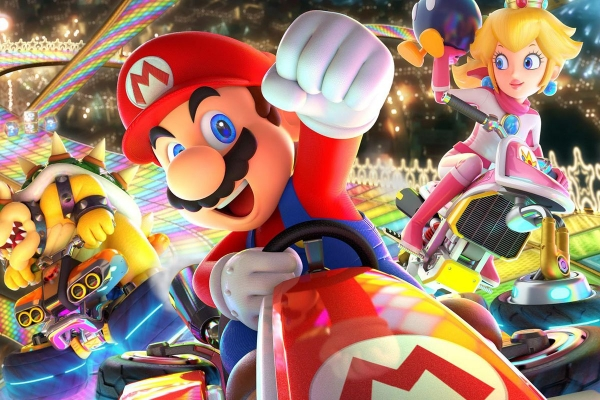
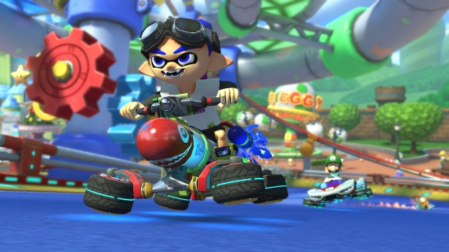
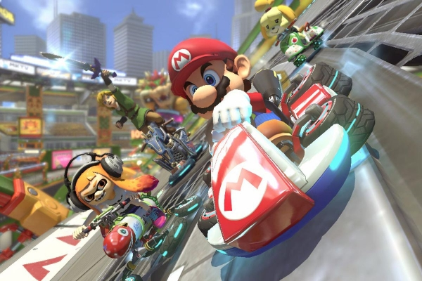
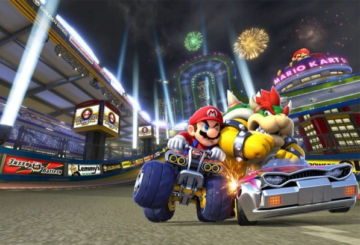

¡Compite y lucha contra tus amigos en la versión definitiva de Mario Kart™ 8 Deluxe!
¡Sal a la carretera con la versión definitiva de Mario Kart™ 8 Deluxe y juega en cualquier momento y lugar! Compite con tus amigos o lucha contra ellos en un modo de batalla revisado en cursos de batalla nuevos y recurrentes. Juega localmente en multijugador de hasta 4 jugadores en 1080p mientras juegas en modo TV. Cada pista de la versión de Wii U, incluido el DLC, hace un regreso glorioso. Además, los Inklings aparecen como nuevos personajes invitados, junto con favoritos que regresan, como King Boo, Dry Bones y Bowser Jr.
Recorre a toda velocidad pistas como Circuito Tokio del juego Mario Kart Tour, además de las favoritas y recordadas Pinball Waluigi (DS) y Centro Cocotero de (Wii).
Un total de 48 pistas de toda la serie Mario Kart™ aceleran para incorporarse al juego Mario Kart™ 8 Deluxe.
   